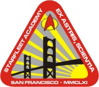

|
Accademia della Flotta Stellare
|
|
|
 |
|
 |
|
|
L'Accademia della
Flotta Stellare ha sede nei pressi di San
Francisco, sulla Terra. Il motto dell'Accademia è
«Ex Astris, Scientia» (The
First Duty).
Per poter accedere all'Accademia, un cittadino non federale deve essere referenziato
da un ufficiale comandante (Heart of Stone).
I cadetti portano sul colletto dei gradi formati da barrette, che potrebbero
indicare il numero di anni di corso frequentati (The
First Duty).
Nel XXIV secolo, «Tecnologie di Fine Millennio» è un corso non obbligatorio
dell'Accademia (Future's End - Part I), uno dei
corsi è «Geometria sub-spaziale avanzata» (Vis à
Vis) e al terzo anno c'è un corso di sei settimane dove ci si abitua
gradualmente alle passeggiate nello spazio (Day of
Honor).
Durante l'addestramento all'Accademia è previsto un corso di sei mesi
riguardante il protocollo di comportamento interspecie. Il manuale Handbook
on Personal Relationships è spesso tre centimetri ed il suo contenuto si può
riassumere in «All Starfleet personnel must obtain authorization from their C.O.
as well as clearance from their medical officer before initiating an intimate
relationship with an alien species.» (Tutto il personale della
Flotta Stellare
deve ottenere il permesso dal proprio ufficiale comandante e dall'ufficiale
medico prima di iniziare una relazione intima con un rappresentante di una
specie aliena) (The Disease).
Nel
2377 la letteratura della
Terra fa parte del programma di studi
dell'Accademia (Human Error) e uno degli
esami da superare è «Early Starfleet History» (Q2).
Prima di ottenere il diploma finale, tutti i cadetti
devono sostenere un esame di stabilità psicotronica (The Schizoid Man).
- Il motto dell'Accademia riprende quello dell'Apollo 13, che era «Ex
Luna, Scientia» (dalla Luna la conoscenza).
- Nelle prime versioni, il motto dell'Accademia era «Ex Astra, Scientia»,
ma poi l'errore è stato corretto.